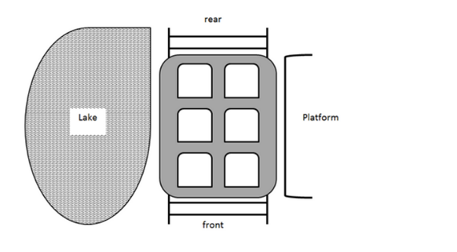

LP_Question(GRK Partners)
총 10문제이며, 제한 시간은 20분입니다.
성함을 입력해주세요.
*
전화번호를 입력해주세요. (숫자만 입력해주세요.)
*
생년월일을 입력해주세요. (YYYYMMDD)
*
Question 1 of 10
*
Four student groups at the university - the swim club, the jazz combo, the table tennis team and the rugby sevens - schedule a social event on Wednesday, Thursday or Friday in the same week. The social events (in no order): movie night, pub quiz, escape room and ten-pin bowling. Two events are scheduled for the same day and time. The movie night is scheduled for the day before the pub quiz and the day after the swim club event. The table tennis team and the jazz combo have their events (neither of which is the escape room) on the same night. The rugby sevens event is scheduled a day after the ten-pin bowling event. Which of the following must be true?
A. The escape room event is on Wednesday.
B. The rugby sevens event is on Thursday.
C. The table tennis event is a pub quiz.
D. The jazz combo event is ten-pin bowling.
Question 2 of 10
*
Mindy, Morgan, Carol and Beth went shopping. They each spent exactly £100. The items
they bought included shirts at £20, skirts at £35, jeans at £45 and dresses at £30.
Mindy and Beth bought the same items.
Morgan bought blue jeans.
Mindy bought 1 more item than Morgan.
Carol bought the maximum amount of items possible, which was 1 more than Beth.
Only 1 pair of jeans was bought amongst the group.
Which of the following must be true?
A. Beth bought 2 dresses and 2 shirts.
B. Carol bought 6 items.
C. Morgan bought black jeans.
D. Morgan did not buy a skirt.
Question 3 of 10
*
Billy has a mixed toolbox of either mechanical or electric tools in his cupboard. This box
contains four tools: a screwdriver, wrench, spanner, and crowbar. Each of these are
either made out of iron, or steel. Billy can only use each of these tools for one purpose,
which could be twisting, prying, pulling or pushing.
The two mechanical tools are both made out of steel. The two tools that can twist and
push are made of iron.
The screwdriver is not made of iron, and can be used to pull.
The crowbar is not an electric tool.
Which of the following statements is true?
A. The iron spanner is used to push, and is a mechanical tool.
B. The steel wrench is used to twist, and is an electrical tool.
C. The iron screwdriver is used to pull, and is a mechanical tool.
D. The steel crowbar is used to pry, and is a mechanical tool.
Question 4 of 10
*
A container shipping company, OSL, owns 250 vessels. Currently 86 of their ships are
less than 10 years old and of those vessels 31 are currently docked in port. Another 58
vessels are docked in port but are older than 10 years and of these ships 12 are panamax
ships which means they can transport up to 65 000 tonnes of cargo. All ships less than
10 years old can transport up to 85 000 tonnes of cargo. There are currently 63 panamax
vessels not docked in ports.
Which of the following categories accounts for the most ships?
A. Ships docked in port.
B. Ships less than 10 years old.
C. Panamax ships.
D. Ships that are older than 10 years and are neither docked in port nor panamax
ships.
Question 5 of 10
*
A manufacturer of drain pipes can create four different types of pipe in their factory:
PVC, lead, iron, or copper, each of which are always made in either long or short
variants. In no particular order, each of these materials cost $0.5, $1, $1.5 or $4 per pipe
to manufacture, regardless of the length of the pipe. The manufacturer creates one pipe
out of each of the four materials, at least one of which is long, and at least one of which
is short.
The copper pipe is three times more expensive than another type of pipe to manufacture,
and is the same length as the lead pipe.
The iron pipe costs twice as much as one of the other types of pipe, and is the same
length as another type of pipe that is more expensive to manufacture.
The lead pipe is not short, and costs the most to make.
Which of the following statements is true?
A. The PVC pipe is short.
B. The iron pipe costs $0.5 to manufacture.
C. The lead pipe is short.
D. The iron pipe is short.
Question 6 of 10
*
Five teams from the same city - the Lions, the Rangers, the Unicorns, the Wasps and the
Zebras - compete in a regional tournament.
Each team wears jerseys of the same colour: white, red, yellow, purple or black.
Each team wears trainers of the same colour: white, black, orange, blue or green.
No team wears jerseys and trainers of the same colour.
The Zebras and the Lions do not wear black.
The Wasps and the Unicorns do not wear white.
The Rangers wear green trainers, but they do not wear purple or yellow jerseys.
The Lions wear red jerseys, but they do not wear white or blue trainers. The jerseys worn
by the Unicorns are the same colour as the trainers worn by the Wasps.
The Zebras wear white trainers, but they do not wear yellow jerseys.
Which of the following must be true?
A. The Rangers wear black jerseys.
B. The Unicorns wear black trainers.
C. The Wasps wear blue trainers.
D. The Zebras wear purple jerseys.
Question 7 of 10
*
On a coach travelling from London to Manchester, all passengers are either lawyers,
accountants or chefs. All passengers are from either Portugal, India or the USA.
Between London and Manchester, the coach stops twice.
At the first stop, only the lawyers who are not American, leave the coach.
At the second stop, only the Portuguese who are not lawyers, the American chefs and
the Indian chefs leave the coach.
Which of the following must be false?
A. None of the chefs reach Manchester.
B. Indian accountants reach Manchester.
C. Out of all lawyers, only the American ones reach Manchester.
D. Out of all Indian passengers, only the lawyers reach Manchester.
Question 8 of 10
*
Six students (including Robin) get into a rollercoaster car that seats six. The rollercoaster is next to lake.

Tiffany does not sit next to Stu or Terrence, but she sits directly in front of Sarita. Umberto sits between
Stu and Terrence on the platform side of the car. Stu does not sit next to Sarita.
Who must sit in the front of the car, on the lake and platform sides, respectively?
A. Robin and Stu.
B. Stu and Robin.
C. Tiffany and Robin.
D. Tiffany and Umberto.
Question 9 of 10
*
Beth, Joy, Helen and Cora decided to buy ice creams.
The flavours of ice creams that they bought are chocolate, strawberry, vanilla and pistachio.
Each ice cream has a different topping, which are sprinkles, marshmallows, wafers and almonds.
Helen did not buy strawberry or chocolate ice cream, but she chose marshmallows as her topping.
The person who bought chocolate ice cream chose neither wafer nor sprinkles.
Beth boughta pistachio ice cream but did not choose sprinkles.
Which of the following is true?
A. Joy did not buy vanilla ice cream.
B. Cora chose wafers as her topping.
C. Helen did not buy vanilla ice cream.
D. Beth chose almonds as her topping.
Question 10 of 10
*
All medical students must take part in one of the monthly conferences, each year they are at medical
school. Some students in 3rd year, but no students in 1st year take part in more than 1 conference per
year. No students who attend a conference in October can attend another in November and those who
attend in December cannot attend again until March. All students who take part in a conference in April
must also take part in May. Alex, a 3rd year student, did not attend the conference in October.
Which of the following statements is true?
A. Alex did not attend the conference in November.
B. No students in 1st year take part in the conference in April.
C. A 1st year medical student attended the conference in April and May.
D. Alex attended the conference in December and January.
제출하기